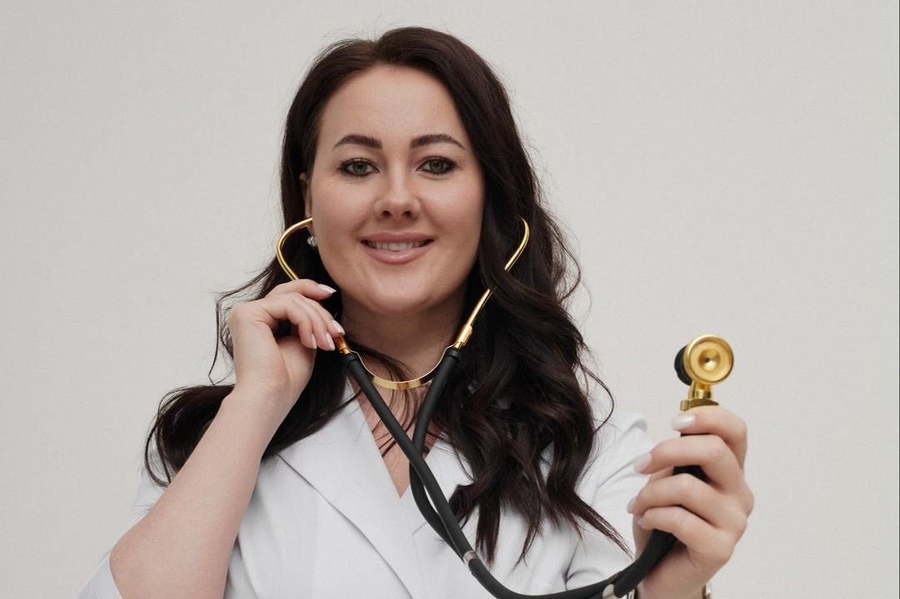
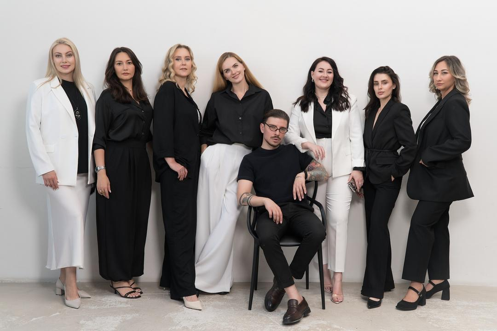
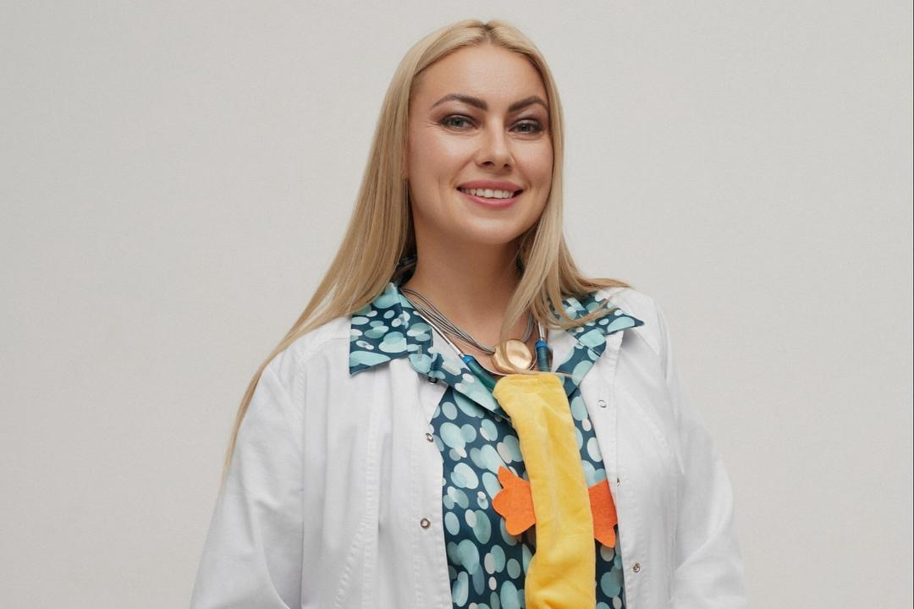
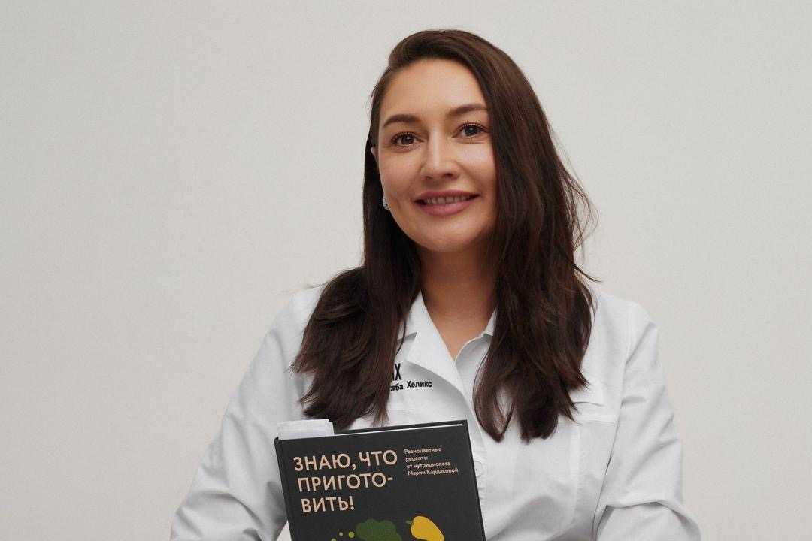

Хрусталёва Галина Васильевна
Врач терапевт, аллерголог-иммунолог
- лечение аллергии (взрослые, дети 5+)
- диагностика иммунитета
- терапия: ОРВИ, давление, холестерин, планирование беременности, анемия
- профилактические осмотры
Сообщество врачей
Сообщество, где врачам доверяют, а пациентам — верят
Познакомиться с командой
Республика Хакасия, г. Абакан
01 сообщество
Ничего не стесняйтесь — спрашивайте обо всём, что вас волнует.
Действительно ли прививки так вредны? Нужно ли пить антибиотики «для профилактики»? Разберёмся на основе доказательной медицины.
Как реально сохранить здоровье в ритме современной жизни.
02 врачи

Врач терапевт, аллерголог-иммунолог

Врач педиатр, аллерголог-иммунолог, нутрициолог

Врач эндокринолог, диетолог